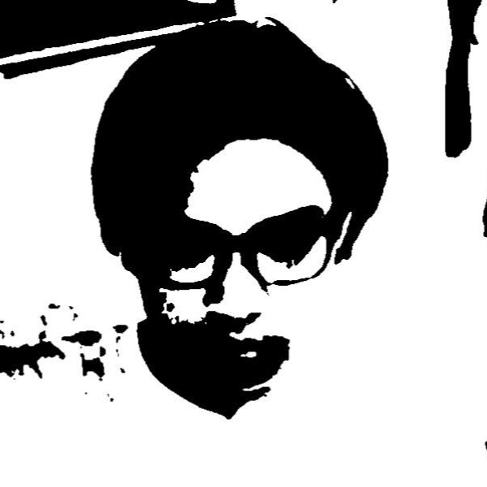

Available for new opportunities
El FrancisPortfolio

Video editor since 2019, specializing in transforming raw footage into engaging, polished videos with strong storytelling, smooth pacing, and eye-catching edits.
Scroll to explore ↓Work / 01
Personal Projects
About
Since 2019, I’ve shaped footage into videos that feel clear, energetic, and worth watching.
I specialize in video editing with a strong eye for rhythm, storytelling, and the details that keep an audience engaged, especially in fast-moving short-form content.